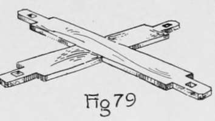
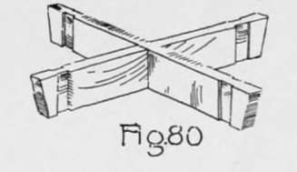
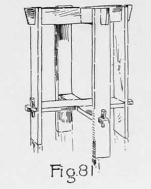
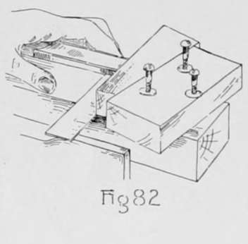
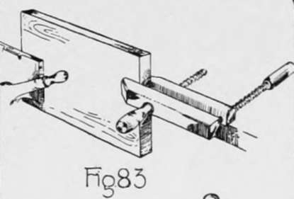
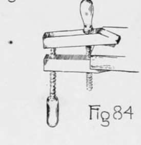
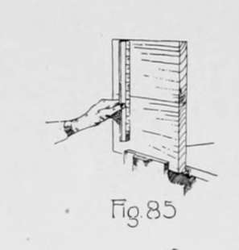
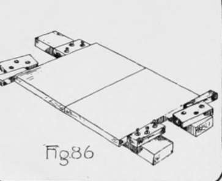
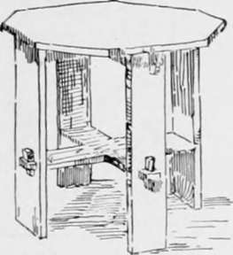

Furniture Making-Keyed Construction. Part 3
Description
This section is from the book "Beginning Woodwork At Home And In School", by Clinton Sheldon Van Deusen. Also available from Amazon: Beginning Woodwork At Home And In School.
Furniture Making-Keyed Construction. Part 3
(o) A 1/4" chamfer should now be laid out on the edges that are to be vertical at the ends of the tenons. Use pencil and try-square to lay them out, and then cut them with the chisel as in Fig. 63.
(p) Try to insert each tenon in a mortise so that the joint side of the brace and the joint side of the leg come on the same side, with the working face of the brace on top and the working face of the leg on the inside. Do not try to drive the tenon into the mortise; if it cannot be pushed into place without great effort search for the obstruction and remove it. Possibly the brace was not planed to correct thickness or the middle of the inner surfaces of the mortise were not chiseled out enough to form true surfaces. As each tenon is fitted to a mortise it is well to make some mark on the under side of the tenon and the same mark on the inside of the leg near the mortise so that the same tenon and mortise may be put together when the work on the taboret is completed.
(q) For laying out the slot in the upper end of the leg, set the gage to the distance (7) from the side of the leg to the nearer edge of the slot, and with the gage-block against the joint side, gage from the knife line to the end on the working face and the surface opposite, also across the end. Change the set of the gage to the distance (30) the farther edge of the joint is from the side of the leg and gage as before. The wood between these gage lines down to the knife line may be removed by sawing so that the outer edge of the saw teeth come exactly to the gage lines ; then bore a hole near the lower end of the slot with the ⅜" auger-bit and chisel out the lower end as was done in cutting the mortise.
(r) Set the gage to ⅛", and with the gage-block against the working face, gage a line between each pair of knife lines that cross the joint side and the side opposite on each of the top braces. Change the set of the gage to 5/8" and, with the gage-block against the working face, gage another line between each pair of lines referred to above. By a method similar to that used in Chapter VI, i to r, remove the wood outside of these gage lines and between the knife lines. This will reduce the thickness between the knife lines to ½".
(s) Try fitting each thinned part of the upper braces into an opening in the top of a leg, so that the working face of the brace and the joint side of a leg come on the same side. Observe the same caution about forcing the joints together, as when fitting the tenons in the mortises, and try to discover and remove any obstruction, instead of trying to force the pieces together. When fitted, make marks on each piece so that the same pieces may be fitted together later.
(t) The two lower braces should now be fitted together, as in Fig. 79, with a half lap joint, so that both working faces will be on top; and the two upper braces should be fitted together in a similar manner as shown in Fig. 89, so that both joint sides will be on top. This joining may be done as explained in Chapter VI, d to s, except that the two parts of the cross are not in one piece as they were then. It will therefore be necessary to use special care that all gaging is done either from the working face or joint side.
(u) Now by short knife and gage lines locate on each of the two upper braces on the side opposite the joint side, two points 3¼" from the end of that side and in the middle of its width. With the ⅜" auger-bit, bore a hole at each of the points, 1¼" deep. Then with the 3/16 auger-bit bore on through the remainder of the wood.
(v) With a piece of No. 1 sandpaper wrapped around a block, as in Fig. 64, sandpaper very thoroughly all surfaces of the legs, braces and keys. In doing this rub lengthwise of the grain where possible. Then put the entire frame together as in Fig. 81.
(w) To prepare a clamp for use in gluing up the top, first plane a working face on each of the two pieces of "two by four". Next plane, by the rules for planing, four blocks 6"x 2¼"x1⅛". Also make two wedges of the same form as the keys made in j each 6" long, 1½" wide at one end, 1" wide at the other end and 1⅛" thick. Now locate and bore three ¼" holes in each of the four blocks made above, two of them being 5/8" from the joint side and 1¾" from the ends, and the third 1 1/2" from the joint side and in the middle of the length. One of these blocks should now be fastened to each of the long pieces near one end, using three 2⅛" No. 14 round-headed screws and washers. To find the correct location for the blocks on the working face of the long pieces use one of the wedges and the try-square as in Fig. 82, and by striking the screws with a hammer, points will be located where the screws should enter. Use the 4/32' twist-bit, and bore a hole at each of these points, 1⅛" deep. The blocks may now be screwed fast. The other two blocks being fastened in place as shown in Fig. 86, the clamps are now ready for use.
(x) The top of the taboret is to be made of two pieces and should be glued together as follows: Plane the working face of each of the two pieces for the top. In selecting the surface to be planed for the working face of each piece it is desirable to use the surface that was nearer the center of the tree from which it was cut, for one of the pieces, and for the other the surface that was nearer the bark; this may be determined by observing the rings of growth on the ends of the pieces. By arranging the pieces in this manner the tendencies in the two pieces to warp counteract each other. Next, plane an accurate joint side on each piece. If the piece is clamped in the vise in the usual way it is too high and unsteady for convenience in planing, and it is therefore advisable to fasten a hand screw to one end of the piece and clamp the piece in the vise as in Fig. 83. Beginners usually find considerable difficulty in managing a handscrew, but if it is remembered that the two jaws should never be far from parallel, little difficulty need be experienced. In adjusting the handscrew to any work, it should be brought to a position such as is shown, somewhat exaggerated, in Fig. 84; then by tightening the end screw, the jaws may be brought to a parallel position. Some experience will be necessary to determine how tight the middle screw should be in order that the jaws may be parallel when the end screw is tightened. When the two joint sides are completed, clamp one piece in the vise with the working face to the front and the joint side up, and on this place the other piece with its working face to the front and its joint side in contact with the joint side of the other piece. This will show whether the working faces and joint sides of the two pieces have been accurately planed or not; for if these are not correct there will be openings between the joint sides, or the working faces will be shown to be out of line when tested with a straight-edge (Fig. 85). If the joint is not a good fit apply the tests again to the working faces and joint sides, and make corrections where needed. It is not an easy matter to make a good glue joint but perseverance will accomplish it. When the joint is fitted, place the pieces for the top of the taboret on the clamps with their working faces down, and with the wedges in the position shown in Fig. 86, fasten the loose blocks in position by the method explained in w. Next drive the wedges in between the blocks and pieces to make sure that the joint is ready for gluing; then remove the wedges, cover both of the joint sides with a thin coat of liquid glue and again clamp the pieces together, using care that the working faces and ends of the two pieces are in line. It is best to leave the pieces in the clamps ten or twelve hours.
(y) After removing the clamps the piece should be planed by the rules for planing to the following dimensions 15"xl5"x3/4". Next draw a light pencil line diagonally across the square on the working face and measure from each corner along each side and end, a distance equal to one-half the length of this diagonal, and with the beam of the try-square against the working face, draw pencil lines square across the sides and ends at each of these points. With the straight-edge and knife draw lines on the working face diagonally across each corner connecting the ends of the two pencil lines which are adjacent to the corner. These lines, with parts of the sides of the square, form a regular octagon. Now clamp the piece in the vise and saw off the corners nearly to the knife lines; then block-plane to the lines. Next lay the octagonal piece on the bench with the working face up and place the frame (Fig. 81) wrong side up on it so that the center line of the joint side of one of the braces is in contact with the diagonal previously drawn and with the two ends of this same brace at equal distances from the sides of the octagonal piece. Place the four 1¼" No. 10 round-head screws in the holes in the braces; then using the nail set, wrong end up, to reach them, strike each lightly to locate the points for the holes in the top. Now 4/32" with the twist-bit bore holes 1/2" deep at each of the four points located. The frame may now be screwed to the top and the taboret is ready for the finish.
(z) To finish the taboret, secure a barrel and if there are cracks in it paste paper over the outside of them to make it as near air-tight as possible. Pour about two ounces of strong ammonia in a dish and set the taboret over it; then invert the barrel over the taboret, closing all openings around the edge of the barrel. If the ammonia is as strong as it should be, it will be necessary to have everything ready for quick work before pouring it into the dish and then care should be taken that the fumes do not choke you. Let the taboret remain in the fumes at least fifteen hours and then remove the barrel and allow some time for the fumes to escape. Now shake the bottle containing the boiled oil and hard-oil finish and with a cloth thoroughly rub it on and into all parts of the taboret.

Continue to:
- prev: Furniture Making-Keyed Construction. Part 2
- Table of Contents
- next: Chapter IX. Furniture Making - Closed Mortise-And-Tenon Construction